Min portfolio
Herunder finder du tre af de projekter, jeg er mest stolt af fra mit studieforløb – fra mit eksamensprojekt på 2. semester til det jeg arbejder med lige nu på 3. semesters valgfag "Advanced Media Production".
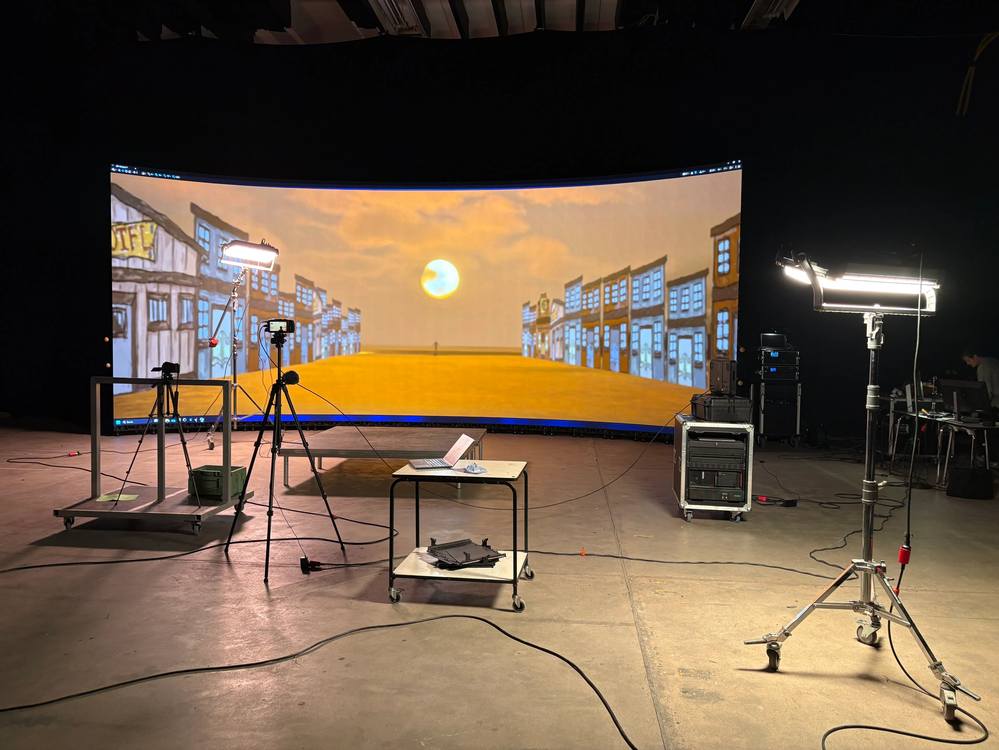
Virtual production - Western musikvideo
En musikvideo skudt foran en LED-skærm i et selvbygget western-univers i Unreal Engine.
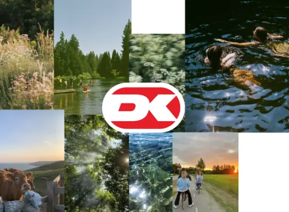
Dankort Øremærket – digital kampagne til unge
En UX-case for Dankort Øremærket, hvor vi gjorde det tydeligt for unge, hvordan et køb med Dankort, automatisk støtter dansk natur.
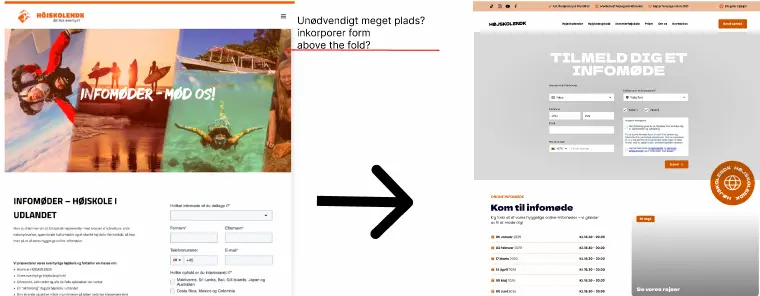
HöjskolenDK – SoMe-strategi & tilmeldingsflow
Et rigtigt kundeprojekt, hvor vi styrkede HöjskolenDK's SoMe-tilstedeværelse og redesignede deres tilmeldingsflow i Astro.
Virtual Production – Western-musikvideo
En gruppeopgave under temaet "Avanceret filmproduktion", hvor vi producerede en musikvideo med virtual production. Vi lavede her et western-univers bygget i Unreal Engine, vist på en LED-skærm, som vi filmede en rigtig skuespiller foran.
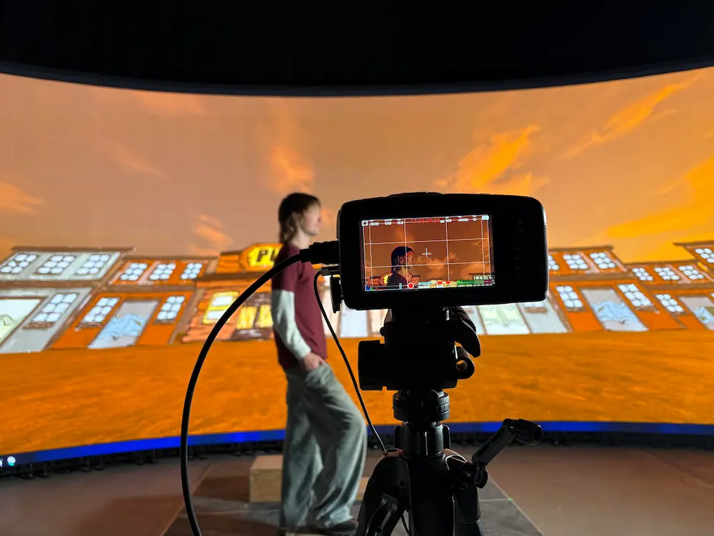
Denne opgave gik ud på at producere en kort film ved hjælp af virtual production, en teknik hvor computergenerede miljøer vises på en LED-væg i et studie i stedet for en greenscreen, så skuespillere og kamera kan agere direkte foran den færdige baggrund.
Min gruppe valgte at lave en musikvideo, der foregår i et western-miljø. Jeg var med til at bygge selve verdenen: vi designede rekvisitter i hånden, modellerede dem i Blender, og satte dem sammen med resten af miljøet i Unreal Engine. Det færdige univers blev derefter projiceret på en LED-skærm i studiet, hvor vi filmede en skuespiller fra gruppen som det virkelige element i scenen.
Værktøjer: Unreal Engine, Blender, LED-væg/studieopsætning, DaVinci Resolve
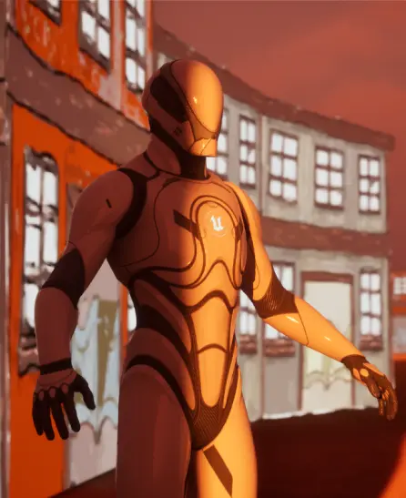
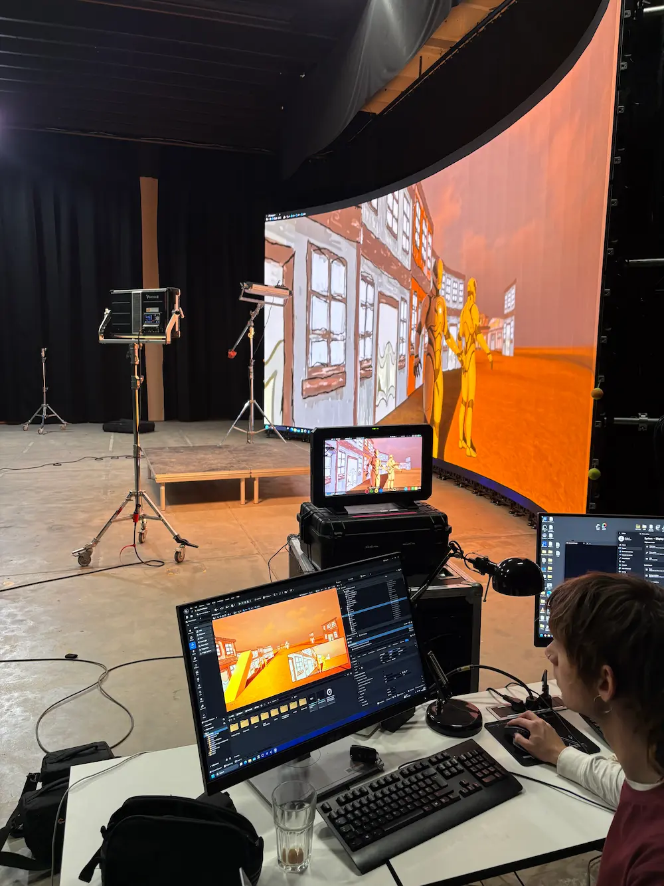
Vi startede med at udvikle konceptet for musikvideoen og fastlægge, hvilket univers historien skulle foregå i. Sangen, som er skrevet af et gruppemedlem, lagde op til et western-miljø. Det besluttede vi både var visuelt stærkt og realistisk at bygge digitalt.
Rekvisitterne skitserede vi først i hånden, hvorefter vi modellerede dem i Blender og fik dem ind i Unreal Engine, hvor vi byggede hele scenens miljø, lys og stemning.
En stor del af processen handlede om at få det virtuelle og det
virkelige til at spille sammen. Vi eksperimenterede meget med
lyssætning i studiet, så lyset på vores skuespiller matchede lyset
fra LED-skærmens digitale baggrund, så overgangen mellem det ægte
og det computergenererede blev så realistisk som muligt.
Det viste sig her at være lidt en udfordring, da vi havde valgt en
"golden hour"/solnedgangs setting, og vi vidste ikke på forhånd,
hvor meget selve LED-skærmen også ville virke som en lyskilde.
Meget kunne dog også påvirkes i DaVinci Resolve efterfølgende.
Efter optagelserne klippede vi filmen i DaVinci Resolve, hvor vi arbejdede med både lyd og color grading for at give musikvideoen et samlet, filmisk udtryk.
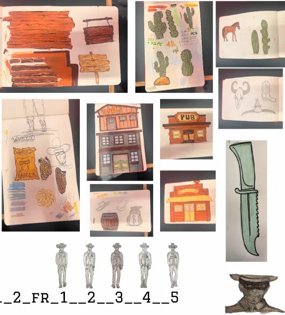
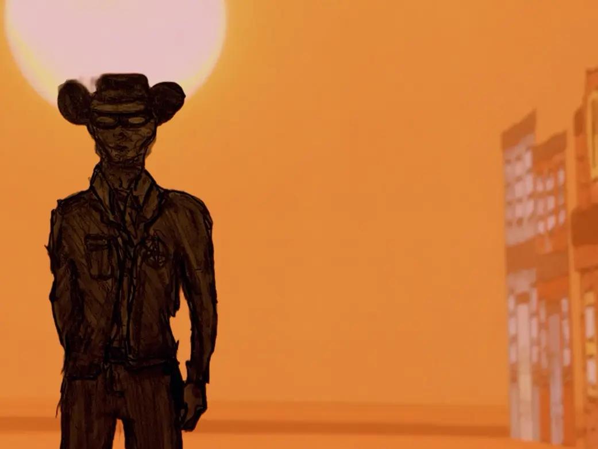
Dette projekt har givet mig en masse konkret erfaring med Unreal Engine og Blender. Fra at bygge digitale miljøer til at omsætte håndtegnede rekvisitter til 3D-modeller.
Jeg har også lært, hvor meget lyssætning betyder i en virtual production-opsætning, og hvordan man arbejder med at blende det virkelige og det virtuelle sammen, så det opleves som én samlet verden. Derudover har jeg fået erfaring med filmklipning, lyd og color grading i DaVinci Resolve.
Projektet er et af de tydeligste eksempler på, hvorfor jeg er blevet så optaget af digitale, interaktive oplevelser. At gå fra idé og koncept til at se et helt univers komme til live, og stå i det fysisk foran en skærm, var virkelig en fed oplevelse, og noget som jeg glæder mig til at lave mere af.
Resultatet er altså vores lille film, som fungerer som en
musikvideo. Da vi stadig er nye i de programmer som vi brugte, så
gik der også meget tid med at lære de forskellige værktøjer at
kende, og med at prøve at finpudse alt så det blev så tæt på vores
ønskede resultat som muligt. Her både på vores egne computere, men
også i studiet.
Filmen er derfor endnu ikke helt færdigt, men med den læring som
vi allerede har fået, så ser vi frem til at bygge videre på den.
Dankort Øremærket – digital kampagne til unge
Et gruppeeksamensprojekt, hvor vi skulle skabe en digital løsning, der gør det tydeligt for unge, at almindelige Dankort-betalinger automatisk støtter dansk natur gennem initiativet Dankort Øremærket.
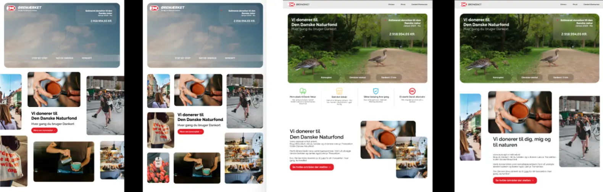
Dette var mit afsluttende eksamensprojekt på 2. semester, udarbejdet i en gruppe på fire. Opgaven tog udgangspunkt i en case stillet af Dankort Øremærket til undervisningsbrug, det var altså ikke et reelt samarbejde med virksomheden, men en skarpt defineret opgave, vi skulle løse som en digital case.
Vores problemstilling var, hvordan Dankort Øremærket kan skabe relevant og engagerende indhold for unge mellem 18-28 år, så de forstår fordelene ved at bruge Dankort. Blandt andet donationen til dansk natur, uden at det føles som reklame for et betalingskort.
Løsningen blev en digital platform bygget i Astro med Supabase som database, suppleret af et SoMe-koncept med video, memes og en konkurrence rettet mod Instagram. Det samlede koncept endte med sloganet "Det betaler sig for dig, lokalt og for naturen".
Min rolle: Jeg var primært med til at drive research og UX-arbejdet (interviews, survey, personas og How-Might-We-statements) samt kodningen af sitet i Astro og Supabase. Resten af opgaven – design, content og test – var en ligeligt fordelt indsats i gruppen.
Værktøjer: Figma, Astro, Supabase, GitHub, Netlify
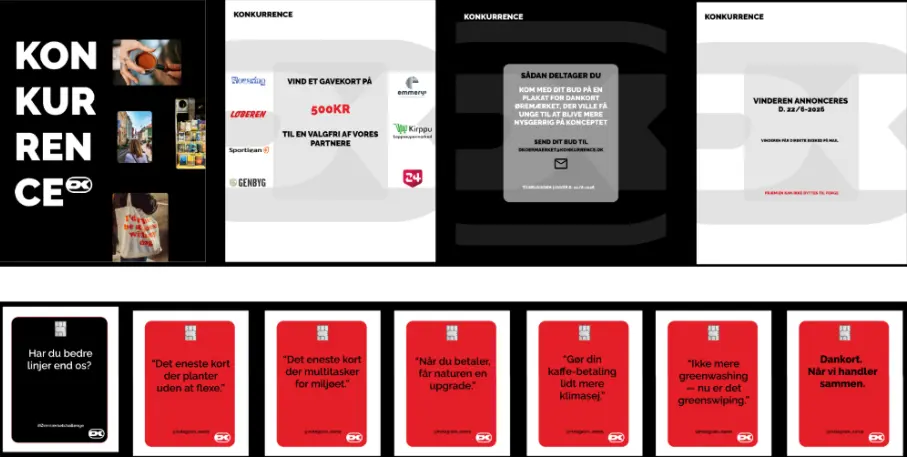
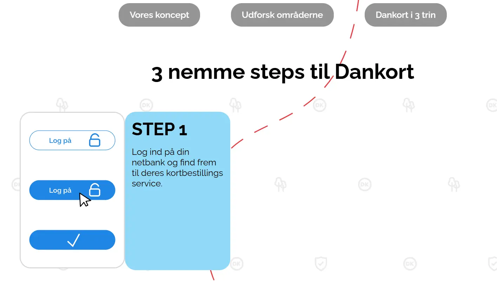
Vi arbejdede i projektet struktureret efter Double Diamond-modellen. I Discover-fasen lavede vi desk research og konkurrentanalyse af Visa og Mastercard, samt kvalitative interviews, en survey med 52 respondenter og en analyse af Dankorts tilstedeværelse på sociale medier. Her stod jeg for størstedelen af interviewene og udarbejdelsen af surveyen.
Indsigterne pegede på, at målgruppen oplever kortskifte som besværligt, at kendskabet til Dankort Øremærket er lavt, og at unge efterspørger gennemsigtighed frem for grøn markedsføring uden substans. Det formulerede vi i Define-fasen til et How-Might-We-statement, to personas og et value proposition canvas, som blev vores fælles pejlemærke resten af processen.
I Develop-fasen arbejdede vi inden for Dankorts eksisterende designsystem og udviklede en styletile, et fælles moodboard og et koncept bygget på en interaktiv donationstæller og et klikbart Danmarkskort. Gruppen testede løbende designet med Likert-tests, mens jeg begyndte at klargøre den tekniske opbygning.
I Deliver-fasen kodede vi sitet i Astro med en komponentbaseret struktur, og koblede Supabase på som database for naturområdernes indhold og billeder. Her brugte vi blandt andet Astros dynamiske routing ([slug].astro) til automatisk at generere en side per naturområde, og regnede pin-koordinaterne til det interaktive Danmarkskort om fra pixel- til procentværdier, så de skalerer korrekt på tværs af skærmstørrelser. Undervejs testede vi løsningen med en 5-sekunders-test, en heuristisk test og Lighthouse, hvilket blandt andet afslørede en kontrastudfordring i tilgængeligheden, som vi noterede som et videre forbedringspunkt.
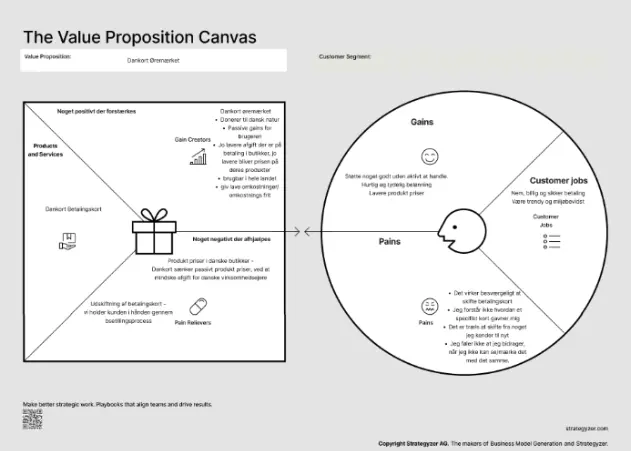
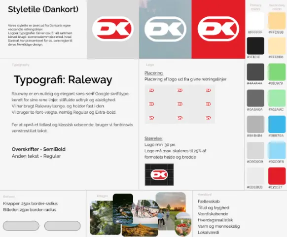
Projektet gav mig solid erfaring med at omsætte kvalitativ og kvantitativ research – interviews, survey, persona-arbejde – til konkrete designbeslutninger, som resten af gruppens arbejde kunne bygge videre på.
På den tekniske side lærte jeg at arbejde komponentbaseret i Astro og at koble en ekstern database som Supabase på et website, herunder dynamisk routing og at omregne data, så et interaktivt element som Danmarkskortet fungerer korrekt på tværs af skærmstørrelser.
Jeg har også fået erfaring med at arbejde efter en fast model (Double Diamond) i en gruppe, hvor beslutninger konstant skal laves i fælles research, og med at holde en klar retning, selv når opgaven involverer mange discipliner på tværs af design, indhold og udvikling.
HöjskolenDK – SoMe-strategi & tilmeldingsflow
Et gruppeprojekt med en rigtig virksomhed, HöjskolenDK, hvor målet var at styrke deres brand på sociale medier og øge tilmeldinger til infomøder gennem et nyt content-univers og et redesignet tilmeldingsflow.
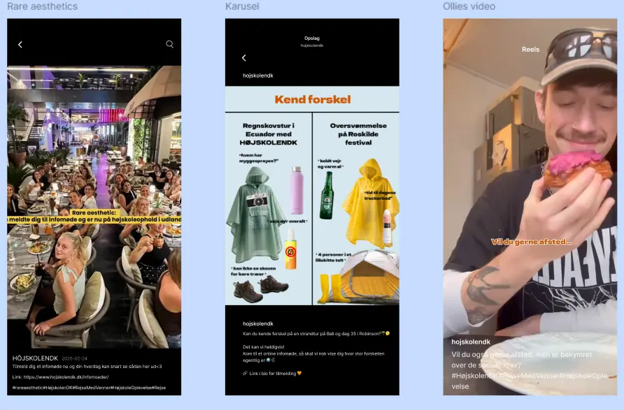
I dette projekt samarbejdede min gruppe på fem med den rigtige virksomhed HöjskolenDK, der udbyder højskoleophold i udlandet for unge. Virksomheden ønskede en højere konverteringsrate til deres infomøder og havde selv begrænset erfaring med SoMe og content creation, så opgaven var at styrke deres digitale tilstedeværelse og gøre vejen fra opslag til tilmelding tydeligere.
Løsningen blev en kombination af en content- og SoMe-strategi til Instagram og TikTok samt et redesignet tilmeldingsflow, som vi kodede i Astro ud fra en udleveret Figma-prototype. Det samlede koncept endte med sloganet "Kom for rejsen, blev for fællesskabet".
Min rolle: Jeg var med til at udvikle content-strategien og kunderejsen, stod selv for TikTok-reelen "Rare aesthetic", og var med til at kode sitet i Astro med Git-branches til versionsstyring. Resten af opgaven var en ligeligt fordelt indsats i gruppen.
Værktøjer: Figma, Astro, GitHub, Premiere Pro, Netlify
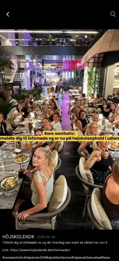
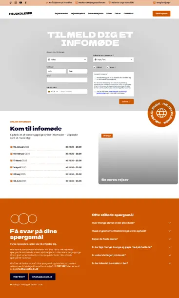
I Discover-fasen lavede vi desk research og fandt blandt andet statistik om angst hos unge, som blev en vigtig ledetråd. Vi gennemgik virksomhedens eksisterende Instagram-profil og så, at indholdet var stemningsskabende, men manglede informativt indhold og et klart tilmeldingslink. Det supplerede vi med kvalitative interviews med fire unge fra målgruppen.
I Define-fasen fandt vi mønstre i interviewene. Her bekymringer om spontanitet, det sociale aspekt og økonomi, og formulerede et How-Might-We-statement om at understøtte brugerens bekymringer, så de tør undersøge opholdet nærmere. Det udmøntede sig i en målgruppedefinition og et value proposition canvas.
I Develop-fasen udviklede vi fire content-stykker til Instagram og TikTok, hver med afsæt i konkrete indsigter fra vores research. Jeg stod selv for "Rare aesthetic"-reelen til TikTok, hvor jeg brugte en aktuel trend og dens originale lyd til at koble konceptet "tilmeld dig et infomøde og du er på højskoleophold" til noget genkendeligt for målgruppen. Jeg var også med til at kortlægge kunderejsen med ECO-modellen og lave vores content-plan, samt redesigne tilmeldingsformularen med fokus på at reducere friktion, blandt andet ved at anvende Hick's law til at begrænse valgmuligheder og tilføje en "Top 5 bekymringer"-accordion direkte ved formularen.
I Deliver-fasen byggede vi Astro-sitet med et fælles GitHub repository, hvor vi arbejdede i branches for at undgå merge-konflikter. Jeg var med til at opbygge komponenter og layout ud fra den udleverede Figma-prototype, så løsningen blev let at vedligeholde og videreudvikle.
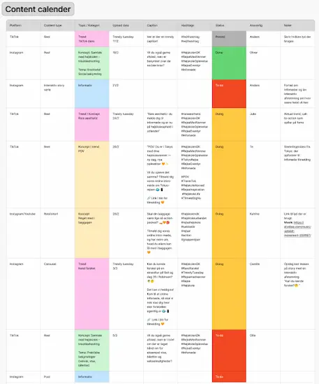
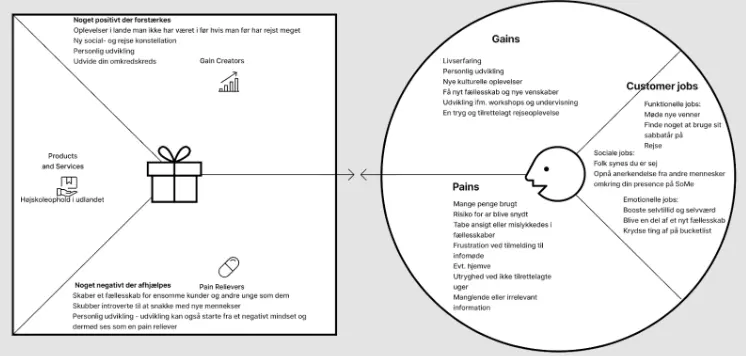
Dette var mit første projekt med en rigtig ekstern virksomhed som kunde, og det lærte mig at oversætte en brief og brugerindsigter til en løsning, der både skal give mening for målgruppen og for virksomhedens forretningsmål.
Jeg har fået konkret erfaring med at planlægge en content-strategi på tværs af flere kanaler, producere trend-baseret videoindhold til TikTok, og arbejde med Git og branches i et større teamsamarbejde om en Astro-kodebase. Jeg har også fået en bedre forståelse for, hvordan UX-principper som Hick's law kan bruges helt konkret til at reducere friktion og bekymringer i en brugerrejse, noget jeg tager med mig videre i mit arbejde med digitale, interaktive oplevelser.